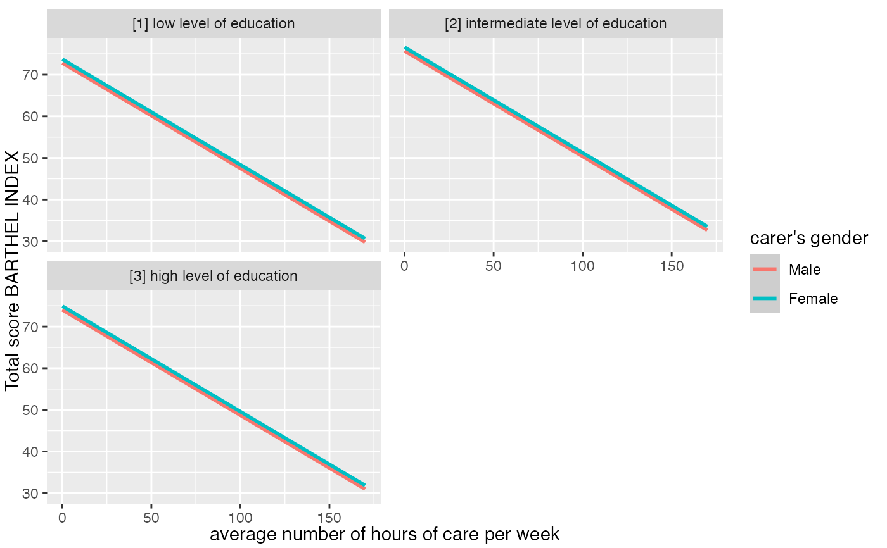
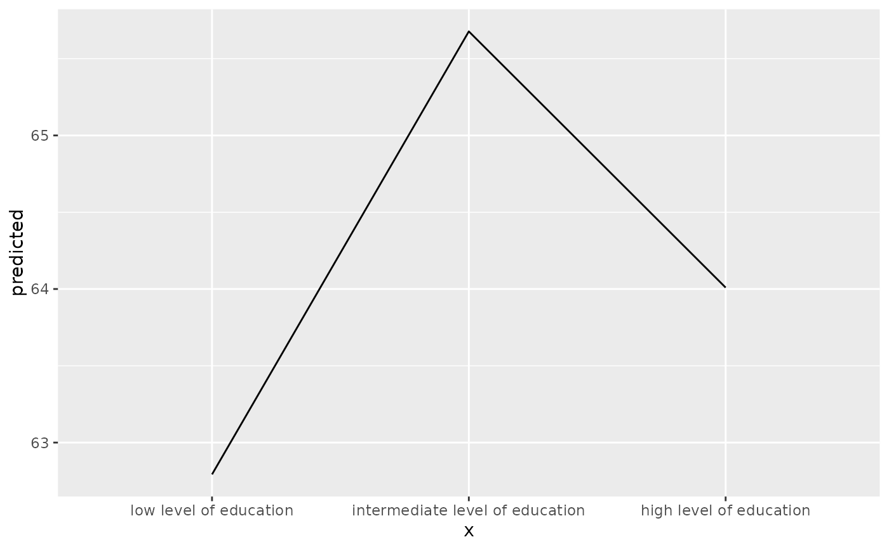

Get variable and value labels from ggeffects-objects. predict_response()
saves information on variable names and value labels as additional attributes
in the returned data frame. This is especially helpful for labelled data
(see sjlabelled), since these labels can be used to set axis labels and
titles.
Usage
get_title(x, case = NULL)
get_x_title(x, case = NULL)
get_y_title(x, case = NULL)
get_legend_title(x, case = NULL)
get_legend_labels(x, case = NULL)
get_x_labels(x, case = NULL)
get_complete_df(x, case = NULL)Arguments
- x
An object of class
ggeffects, as returned by any ggeffects-function; forget_complete_df(), must be a list ofggeffects-objects.- case
Desired target case. Labels will automatically converted into the specified character case. See
?sjlabelled::convert_casefor more details on this argument.
Value
The titles or labels as character string, or NULL, if variables
had no labels; get_complete_df() returns the input list x
as single data frame, where the grouping variable indicates the predicted values for each term.
Examples
library(ggeffects)
library(ggplot2)
data(efc, package = "ggeffects")
efc$c172code <- datawizard::to_factor(efc$c172code)
fit <- lm(barthtot ~ c12hour + neg_c_7 + c161sex + c172code, data = efc)
mydf <- predict_response(fit, terms = c("c12hour", "c161sex", "c172code"))
ggplot(mydf, aes(x = x, y = predicted, colour = group)) +
stat_smooth(method = "lm") +
facet_wrap(~facet, ncol = 2) +
labs(
x = get_x_title(mydf),
y = get_y_title(mydf),
colour = get_legend_title(mydf)
)
#> `geom_smooth()` using formula = 'y ~ x'

# adjusted predictions, a list of data frames (one data frame per term)
eff <- ggeffect(fit)
eff
#> $c12hour
#> # Predicted values of Total score BARTHEL INDEX
#>
#> c12hour | Predicted | 95% CI
#> ----------------------------------
#> 0 | 75.44 | 73.25, 77.63
#> 20 | 70.38 | 68.56, 72.19
#> 45 | 64.05 | 62.39, 65.70
#> 65 | 58.98 | 57.16, 60.81
#> 85 | 53.92 | 51.71, 56.12
#> 105 | 48.85 | 46.15, 51.55
#> 125 | 43.79 | 40.52, 47.06
#> 170 | 32.39 | 27.74, 37.05
#>
#>
#> Not all rows are shown in the output. Use `print(..., n = Inf)` to show
#> all rows.
#>
#> $neg_c_7
#> # Predicted values of Total score BARTHEL INDEX
#>
#> neg_c_7 | Predicted | 95% CI
#> ----------------------------------
#> 6 | 78.07 | 75.01, 81.14
#> 8 | 73.51 | 71.14, 75.88
#> 12 | 64.39 | 62.73, 66.04
#> 14 | 59.82 | 57.91, 61.73
#> 16 | 55.26 | 52.79, 57.73
#> 20 | 46.13 | 42.16, 50.10
#> 22 | 41.57 | 36.78, 46.36
#> 28 | 27.88 | 20.55, 35.22
#>
#>
#> Not all rows are shown in the output. Use `print(..., n = Inf)` to show
#> all rows.
#>
#> $c161sex
#> # Predicted values of Total score BARTHEL INDEX
#>
#> c161sex | Predicted | 95% CI
#> ----------------------------------
#> 1 | 64.09 | 60.69, 67.49
#> 2 | 64.96 | 63.07, 66.86
#>
#>
#> $c172code
#> # Predicted values of Total score BARTHEL INDEX
#>
#> c172code | Predicted | 95% CI
#> ----------------------------------------------------------
#> low level of education | 62.79 | 59.21, 66.38
#> intermediate level of education | 65.68 | 63.55, 67.81
#> high level of education | 64.01 | 60.14, 67.88
#>
#>
#> attr(,"class")
#> [1] "ggalleffects" "list"
#> attr(,"model.name")
#> [1] "fit"
get_complete_df(eff)
#> # Predicted values of Total score BARTHEL INDEX
#>
#> : c12hour
#>
#> c12hour | Predicted | 95% CI
#> ----------------------------------
#> 0 | 75.44 | 73.25, 77.63
#> 35 | 66.58 | 64.91, 68.25
#> 70 | 57.71 | 55.81, 59.62
#> 100 | 50.12 | 47.55, 52.69
#> 170 | 32.39 | 27.74, 37.05
#>
#> : c161sex
#>
#> c12hour | Predicted | 95% CI
#> ----------------------------------
#> 1 | 64.09 | 60.69, 67.49
#> 2 | 64.96 | 63.07, 66.86
#>
#> : c172code
#>
#> c12hour | Predicted | 95% CI
#> ----------------------------------
#> 1 | 62.79 | 59.21, 66.38
#> 2 | 65.68 | 63.55, 67.81
#> 3 | 64.01 | 60.14, 67.88
#>
#> : neg_c_7
#>
#> c12hour | Predicted | 95% CI
#> ----------------------------------
#> 6 | 78.07 | 75.01, 81.14
#> 10 | 68.95 | 67.11, 70.79
#> 14 | 59.82 | 57.91, 61.73
#> 20 | 46.13 | 42.16, 50.10
#> 28 | 27.88 | 20.55, 35.22
#>
#>
#> Not all rows are shown in the output. Use `print(..., n = Inf)` to show
#> all rows.
# adjusted predictions for education only, and get x-axis-labels
mydat <- eff[["c172code"]]
ggplot(mydat, aes(x = x, y = predicted, group = group)) +
stat_summary(fun = sum, geom = "line") +
scale_x_discrete(labels = get_x_labels(mydat))
